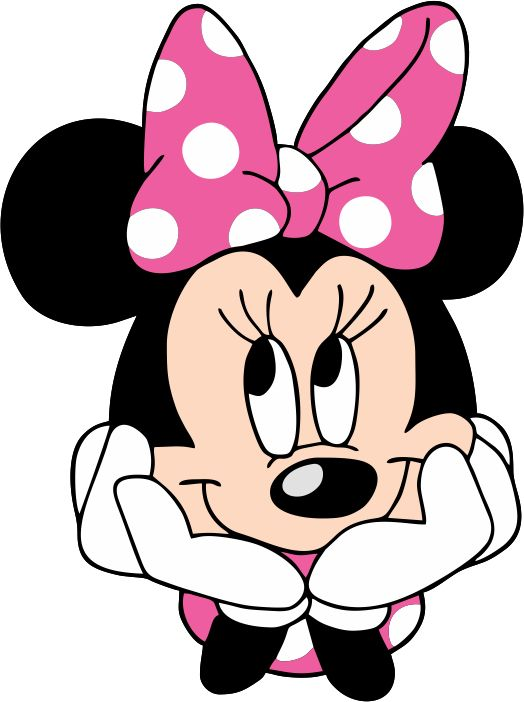

É carinhosa, independente, confidente, mas também sonhadora, acreditando no amor verdadeiro.
Conhecida por seu laço, vestido de bolinhas e personalidade doce, alegre e vaidosa, Minnie é a eterna namorada de Mickey e um ícone de moda.

Minnie Mouse foi criada por Walt Disney e Ub Iwerks. Ela estreou ao lado de Mickey no curta-metragem mudo Plane
Crazy em 1928. No entanto, sua consagração veio no histórico "Steamboat Willie" (o primeiro desenho animado com som sincronizado),
lançado em 18 de novembro de 1928.